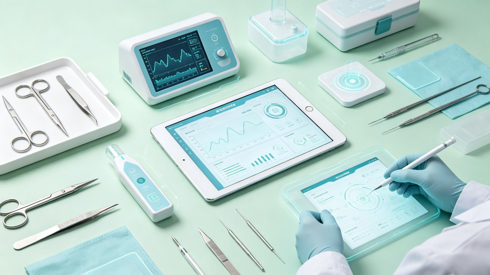

临床胜任力筑基云平台
浙江大学医学院附属第二医院倾力打造的在线医学教育平台，
以百年"3H"育人理念为根基，面向全国医学生开放优质教学资源。
医院介绍
百年广济 · 医道传承 · 教学相长
浙江大学医学院附属第二医院（简称"浙大二院"）创建于1869年，前身为英国圣公会设立的杭州广济医院，是浙江省西医发源地、全国首家三级甲等医院。1881年，广济医校在此诞生，点燃了浙江西医教育的星火。时任校长梅滕更提出"3H"理论——Heart（医者仁心）、Head（知识创新）、Hand（专业技能），高度凝练医学教育本质，历经百年传承，至今仍是浙大二院教书育人的核心精神灯塔。
一百多年来，从首任院长的深深一躬，到今日跨越山海的帮扶足迹，浙大二院始终将"教书育人"与"救死扶伤"深度融合。1998年四校合并后，医院在浙江大学"求是创新"校训的浸润下，构建起从见习、实习到专硕的三阶段递进式育人体系。医院现有解放路院区、滨江院区、城东院区、博奥院区等多个院区，拥有国家临床重点专科16个、国家住培重点专业基地8个，多个专科长期位列复旦排行榜前十，国家自然科学基金获批项目数连续多年全国领先，"国考"连续六年稳居全国第一方阵前列。依托强大的临床、教学水平，十年来累计培育近5000位住培学员。医院还推出"山海·飞鹰"青年骨干高级研修班、大学生村医赋能计划等项目，以教学无界的开放胸怀，将优质医学教育资源辐射全国。
中国科学院院士、浙大二院院长王建安教授指出："变化的，是与时俱进的教学模式；不变的，是一以贯之的育人初心。"在教育改革的浪潮中，浙大二院以传承创新的实践，铿锵回应"何为良医、如何育才"的时代之问。临床胜任力筑基云平台正是医院顺应数字化教育趋势，面向全国医学本科生精心打造的系统化在线课程资源库，致力于为新一代医学生的成长筑牢根基。
筑基课程
涵盖知识、技能、素养、科研四大模块，系统构建临床医学核心能力体系
多学科筑基慕课
20门跨学科慕课资源，由浙大二院各学科优秀师资主讲，涵盖内科、外科、影像、急救等核心领域。
临床问题串联精品小讲课
以真实临床问题为驱动，串联多学科知识点，11讲精品课程助力构建系统化临床思维框架。
本科三基课程
基本理论、基本知识、基本技能——临床医学的必修基石，由各学科主任以病例串联多学科基础诊疗逻辑。

血管急重症临床思维虚拟仿真教学项目国家级
围绕血管急重症的临床诊疗全流程，构建高度仿真的虚拟病例场景，训练学员在紧急情境下的系统化临床思维与决策能力。
严重创伤急诊救治虚拟仿真临床思维训练省级
模拟严重创伤患者的急诊接诊、伤情评估、损伤控制与多学科协作救治全链条，培养"黄金一小时"救治思维。
骨科急重症临床思维虚拟仿真系统省级
围绕骨科急重症的快速识别与处理，构建从急诊接诊到确定性治疗的完整虚拟仿真训练流程。
急性肠梗阻临床思维训练的虚拟仿真项目省级
以急性肠梗阻为切入点，模拟从病史采集、腹部查体、影像学分析到手术时机决策的递进式临床思维训练。
脊柱外科临床思维虚拟仿真教学系统省级
以脊柱外科典型病例为蓝本，模拟从问诊、查体、影像判读到手术决策的完整诊疗路径，夯实脊柱外科临床基本功。
神经外科临床思维虚拟仿真教学项目省级
聚焦神经外科常见急症与疑难病例，通过虚拟仿真技术还原颅内病变的定位、定性诊断与手术规划过程。
《医学人文与专业素养》系列课程
以"医者仁心"为主线，融合医学伦理、医患沟通、职业精神等人文素养教育，培养有温度的医学人才。
关爱心理与情绪健康
帮助医学生掌握心理学基础知识与情绪调节技巧，提升自我认知与抗压能力，为临床工作做好心理准备。
院士讲座《我的医学人文观》
分享数十年从医感悟与人文思考，启发医学生对医学本质的深层理解。
科研启航系列课程
科研入门 · 方法学 · 论文写作 — 临床科研的启航之路。5讲视频课程系统讲解科研全流程。